un:short · 16개 언어 스토어 개편
en-US · un:short - Block Shorts
Keep your apps. Pause Shorts and Reels with a phone flip and task locks.
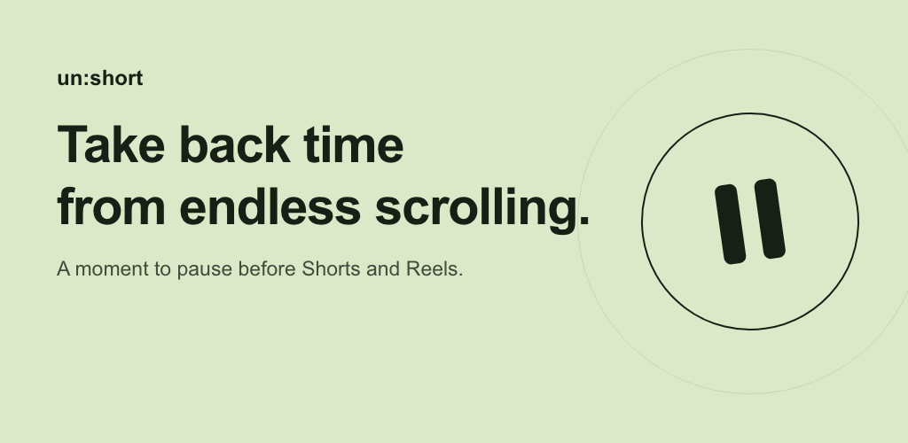
상세 설명
Opened an app to reply to a message, then found yourself scrolling through short videos?
Keep the apps you need. un:short detects Shorts and Reels and adds a pause before you watch, so you can decide whether to continue.
• Choose what to block: YouTube Shorts, Instagram Reels, Facebook Reels, Naver short videos and TikTok. Set blocking for each app separately.
• Flip your phone to pause: the timer runs while your phone is face down and pauses when you pick it up. The default wait is 30 seconds and can be adjusted.
• Tasks first, Shorts later: add tasks to complete before watching. Once all active tasks are done, the normal waiting step resumes. Daily and weekday repeats are supported. Task locking is in Beta.
• Set your own limits: use sleep mode to strengthen blocking at bedtime and a daily viewing limit to manage your time. You can also hide the instant-view button.
• Pause home feeds: optional Beta blocking for Instagram, YouTube, Threads and Facebook.
• See your habits: check daily and hourly viewing statistics and receive report notifications.
Getting started
Allow accessibility and display-over-other-apps permissions, choose the apps to block, and set your waiting time.
Free use includes ads and a daily limit on instant viewing. In-app purchases are available; Premium includes unlimited instant viewing. Detection may vary with Android and target-app versions.
Accessibility
un:short uses Android's AccessibilityService API to detect selected Shorts, Reels and home-feed screens and scrolling, and to control the blocking flow. This permission is required for these features and can be revoked in Android settings.
Privacy
Viewing statistics and tasks are stored on your device. Ads, purchases, usage analytics, crash reporting and feature configuration may use network services. See the privacy policy for details.
ja-JP · un:short - ショート動画ブロック
アプリはそのまま、ショート動画はひと休み。スマホを裏返すタイマーとタスクロックで、つい見てしまう時間を減らしましょう。
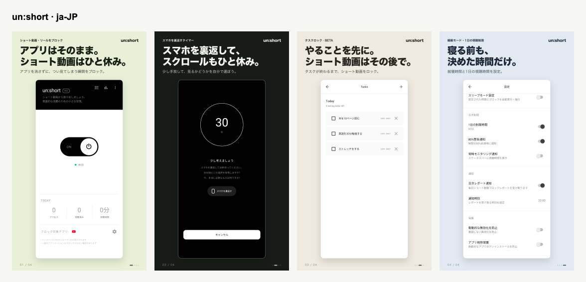
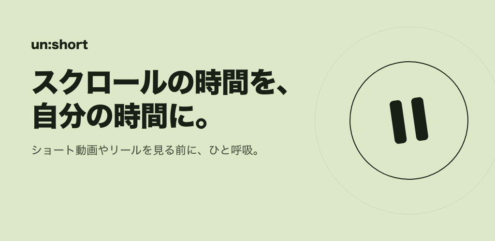
상세 설명
返信するために開いたはずが、いつの間にかショート動画を見続けていませんか？
un:shortは必要なアプリを削除せず、ショート動画やリールの画面を検知してブロックします。見る前に少し立ち止まり、続けるかを自分で選びましょう。
• アプリごとに選択：YouTube Shorts、Instagramリール、Facebookリール、Naverのショート動画、TikTokに対応。
• スマホを裏返してひと休み：画面を下にしている間だけタイマーが進み、起こすと止まります。待ち時間は初期設定で30秒。設定で変更できます。
• やることを先に：視聴前に終わらせたいタスクを登録。対象のタスクをすべて完了すると、通常の待機ステップに戻ります。毎日・平日の繰り返しにも対応。タスクロックはBeta機能です。
• 自分に合った制限：睡眠モードで就寝時間帯のブロックを強化し、1日の視聴時間を設定できます。「すぐ見る」ボタンを非表示にすることもできます。
• ホームフィードもひと休み：Instagram、YouTube、Threads、Facebookのフィードを個別にブロックできるBeta機能です。
• 習慣を見える化：日別・時間帯別の視聴統計とレポート通知で使い方を振り返れます。
使い方
ユーザー補助と他のアプリの上に表示する権限を許可し、対象アプリと待ち時間を設定してください。
無料版には広告が含まれ、すぐに視聴できる回数には1日の上限があります。アプリ内購入に対応し、Premiumでは即時視聴の回数が無制限になります。Androidや対象アプリのバージョンによって検知動作が異なる場合があります。
ユーザー補助について
AndroidのAccessibilityService APIを使用し、選択したショート動画・リール・ホームフィードの画面やスクロールを検知してブロックを制御します。この機能には権限が必要です。Androidの設定からいつでも解除できます。
プライバシー
視聴統計とタスクは端末に保存されます。広告、購入、利用状況の分析、エラー診断、機能設定の取得には通信を使用する場合があります。詳しくはプライバシーポリシーをご覧ください。
zh-CN · un:short - 短视频拦截
保留常用应用，暂停无意识刷视频。翻转手机计时和任务锁定，帮你自主决定何时观看。
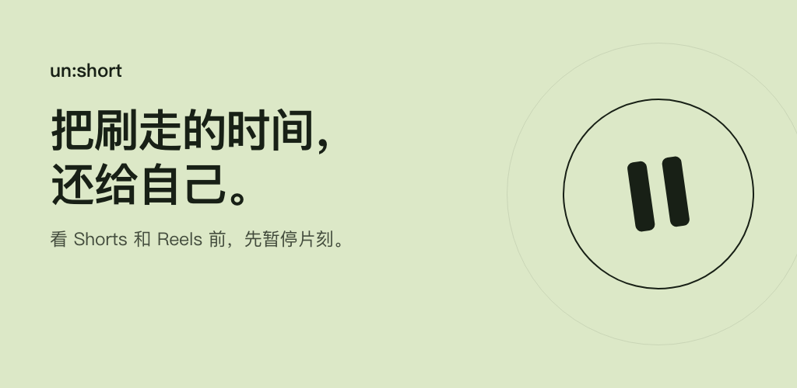
상세 설명
本来只是想回复消息，却不知不觉刷起了短视频？
un:short 无需卸载常用应用，就能检测并拦截 Shorts 和 Reels 界面。观看前先暂停片刻，再决定是否继续。
• 按应用选择：支持 YouTube Shorts、Instagram Reels、Facebook Reels、Naver 短视频和 TikTok，可分别设置。
• 翻转手机，暂停刷屏：手机屏幕朝下时计时，拿起后暂停。默认等待30秒，可在设置中调整。
• 先完成任务，再看短视频：添加观看前要完成的任务。完成所有当前生效的任务后，返回正常等待步骤。支持每天或工作日重复。任务锁定为 Beta 功能。
• 按自己的节奏设限：睡眠模式加强睡前时段的拦截，每日观看限额帮助管理时间。还可隐藏立即观看按钮。
• 首页信息流也能暂停：可单独开启 Instagram、YouTube、Threads 和 Facebook 的首页信息流拦截，功能处于 Beta 阶段。
• 查看使用习惯：按天、按时段查看观看统计，并接收报告通知。
开始使用
允许无障碍服务和显示在其他应用上层的权限，选择要拦截的应用并设置等待时间。
免费版含广告，立即观看次数有每日上限。支持应用内购买，Premium 提供不限次数的立即观看等功能。检测效果可能因 Android 和目标应用版本而异。
无障碍服务说明
un:short 使用 Android AccessibilityService API 检测所选应用的短视频、Reels 和首页信息流界面及滚动，并控制拦截流程。相关功能需要此权限，可随时在 Android 设置中关闭。
隐私说明
观看统计和任务保存在设备上。广告、购买、使用分析、错误诊断及功能配置可能使用网络服务。详情请查看隐私政策。
zh-TW · un:short - 短影片封鎖
保留常用 App，暫停不自覺滑影片。翻轉手機計時與待辦鎖定，讓你自己決定何時觀看。
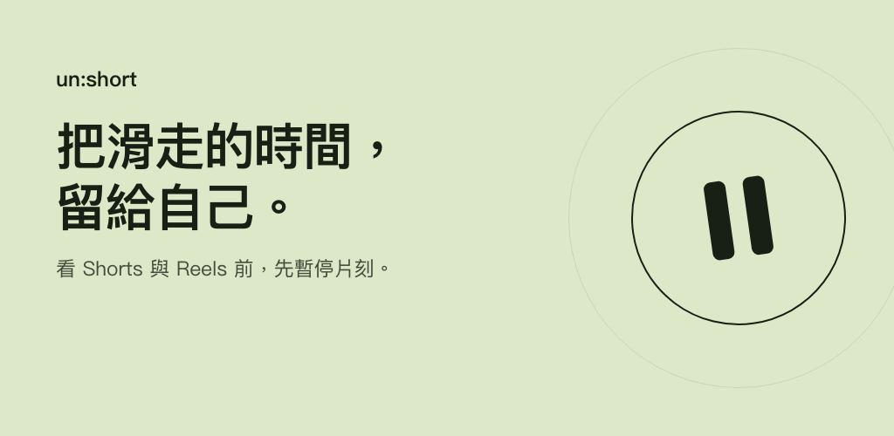
상세 설명
原本只是想回覆訊息，卻不知不覺開始滑短影片？
un:short 不用刪除常用 App，就能偵測並封鎖 Shorts 和 Reels 畫面。觀看前先停一下，再決定是否繼續。
• 依 App 選擇：支援 YouTube Shorts、Instagram Reels、Facebook Reels、Naver 短影片和 TikTok，可分別設定。
• 翻轉手機，暫停滑動：手機螢幕朝下時才計時，拿起後暫停。預設等待30秒，可在設定中調整。
• 先完成待辦，再看短影片：新增觀看前要完成的事項。完成所有目前生效的待辦後，回到一般等待步驟。支援每天或平日重複。待辦鎖定為 Beta 功能。
• 依自己的節奏設限：睡眠模式加強就寢時段的封鎖，每日觀看上限協助管理時間。也能隱藏立即觀看按鈕。
• 首頁動態也能暫停：可個別開啟 Instagram、YouTube、Threads 和 Facebook 的首頁動態封鎖，此功能為 Beta 版本。
• 查看使用習慣：透過每日、各時段的觀看統計與報告通知，了解自己的使用情況。
開始使用
允許無障礙服務及顯示在其他應用程式上層的權限，選擇要封鎖的 App 並設定等待時間。
免費版含廣告，立即觀看次數設有每日上限。提供 App 內購買，Premium 包含不限次數的立即觀看等功能。偵測結果可能因 Android 與目標 App 版本而異。
無障礙服務說明
un:short 使用 Android AccessibilityService API 偵測所選 App 的短影片、Reels、首頁動態畫面及捲動，並控制封鎖流程。相關功能需要此權限，可隨時在 Android 設定中關閉。
隱私說明
觀看統計與待辦事項儲存在裝置上。廣告、購買、使用分析、錯誤診斷與功能設定可能使用網路服務。詳情請參閱隱私權政策。
es-ES · un:short - Bloquea Shorts
Conserva tus apps. Pausa Shorts y Reels al girar el móvil y terminar tus tareas.
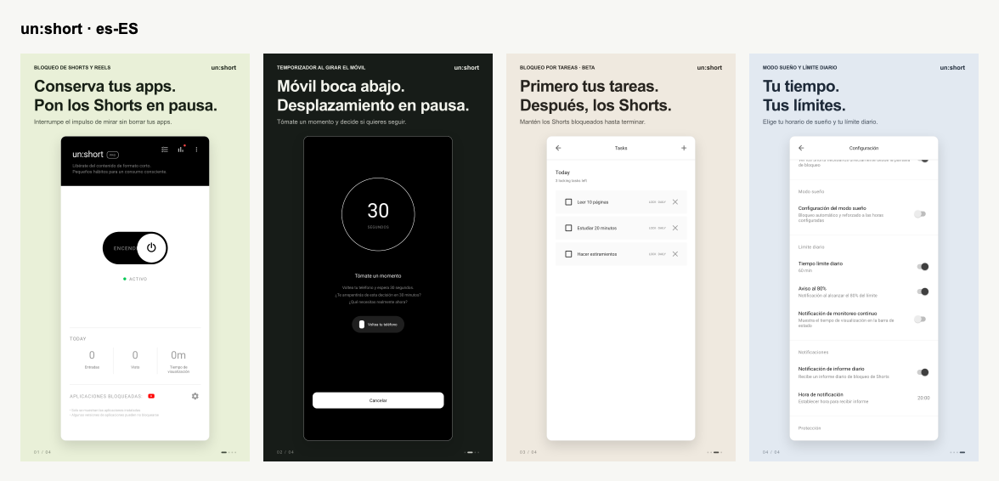
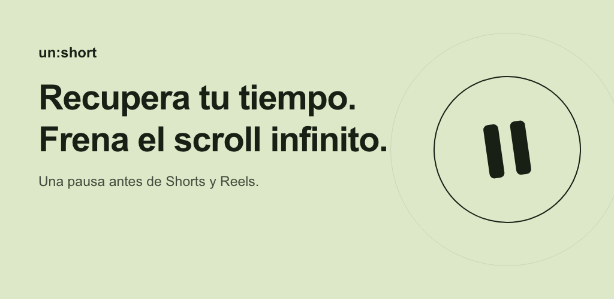
상세 설명
¿Entras para responder un mensaje y acabas viendo vídeos cortos sin parar?
un:short detecta Shorts y Reels y los bloquea sin que tengas que borrar tus aplicaciones. Haz una pausa antes de decidir si quieres seguir viendo.
• Elige qué bloquear: YouTube Shorts, Instagram Reels, Facebook Reels, vídeos cortos de Naver y TikTok. Configura cada app por separado.
• Pon el móvil boca abajo: el temporizador avanza mientras está boca abajo y se detiene al levantarlo. La espera predeterminada es de 30 segundos y se puede ajustar.
• Primero tus tareas: registra lo que quieres terminar antes de ver vídeos. Al completar todas las tareas activas, vuelves a la espera habitual. Permite repetir a diario o entre semana. Función en Beta.
• Marca tus límites: refuerza el bloqueo a la hora de dormir y establece un límite diario de visualización. También puedes ocultar el botón para ver al instante.
• Pausa el feed de inicio: bloqueo opcional en Beta para Instagram, YouTube, Threads y Facebook.
• Consulta tus hábitos: estadísticas por día y hora y notificaciones de informes.
Para empezar, permite el servicio de accesibilidad y la superposición sobre otras apps. Elige las apps y el tiempo de espera.
La versión gratuita incluye anuncios y un límite diario para ver al instante. Hay compras en la app; Premium permite ver al instante sin límite de veces. La detección puede variar según la versión de Android y de las apps.
Accesibilidad
Usamos la API AccessibilityService de Android para detectar pantallas de Shorts, Reels y feeds seleccionados, así como su desplazamiento, y controlar el bloqueo. Estas funciones necesitan el permiso, que puedes revocar en los ajustes de Android.
Privacidad
Las estadísticas y tareas se guardan en el dispositivo. Los anuncios, las compras, el análisis de uso, los informes de errores y la configuración de funciones pueden usar servicios de red. Consulta la política de privacidad.
fr-FR · un:short - Bloquez les Shorts
Gardez vos apps. Mettez Shorts et Reels en pause et terminez vos tâches.
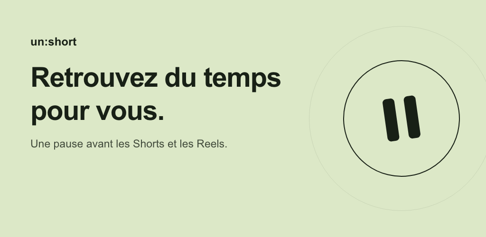
상세 설명
Vous ouvrez une app pour répondre à un message, puis vous vous retrouvez à faire défiler des vidéos ?
un:short détecte et bloque les Shorts et les Reels sans supprimer vos apps. Faites une pause avant de choisir de continuer.
• Choisissez les apps : YouTube Shorts, Instagram Reels, Facebook Reels, vidéos courtes Naver et TikTok. Le blocage se règle pour chaque app.
• Retournez le téléphone : le minuteur avance quand l’écran est tourné vers le bas et s’arrête quand vous relevez le téléphone. L’attente par défaut est de 30 secondes, réglable dans les paramètres.
• Vos tâches d’abord : ajoutez ce que vous voulez terminer avant de regarder. Une fois toutes les tâches actives finies, l’attente habituelle reprend. Répétition quotidienne ou en semaine. Fonction en Beta.
• Fixez vos limites : renforcez le blocage au coucher avec le mode sommeil et réglez une durée de visionnage quotidienne. Vous pouvez aussi masquer le bouton d’accès immédiat.
• Mettez les fils d’accueil en pause : blocage optionnel en Beta pour Instagram, YouTube, Threads et Facebook.
• Suivez vos habitudes : statistiques par jour et par heure, avec notifications de rapports.
Pour commencer, autorisez le service d’accessibilité et l’affichage par-dessus les autres apps. Choisissez ensuite vos apps et votre temps d’attente.
La version gratuite contient des publicités et limite le nombre d’accès immédiats par jour. Des achats intégrés sont proposés ; Premium inclut les accès immédiats illimités. La détection dépend des versions d’Android et des apps ciblées.
Accessibilité
L’API AccessibilityService d’Android détecte les écrans Shorts, Reels et fils d’accueil sélectionnés, ainsi que le défilement, pour gérer le blocage. Ce droit est nécessaire et peut être retiré dans les paramètres Android.
Confidentialité
Les statistiques et tâches sont stockées sur l’appareil. Les publicités, achats, analyses d’utilisation, diagnostics et configurations de fonctions peuvent utiliser le réseau. Consultez la politique de confidentialité.
de-DE · un:short - Shorts blockieren
Apps behalten, Shorts pausieren. Mit Umdrehen des Handys und Aufgabensperre.
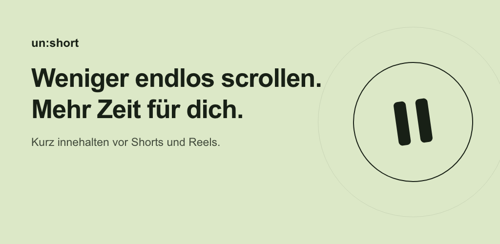
상세 설명
Nur kurz eine Nachricht beantworten – und plötzlich scrollst du durch Kurzvideos?
un:short erkennt und blockiert Shorts und Reels, ohne dass du deine Apps löschen musst. Halte kurz inne und entscheide selbst, ob du weiterschauen möchtest.
• Apps einzeln auswählen: YouTube Shorts, Instagram Reels, Facebook Reels, Naver-Kurzvideos und TikTok.
• Handy umdrehen: Der Timer läuft, solange das Display nach unten zeigt. Hebst du das Handy an, pausiert er. Die voreingestellte Wartezeit von 30 Sekunden lässt sich ändern.
• Erst die Aufgaben: Trage ein, was du vor dem Anschauen erledigen möchtest. Sind alle aktiven Aufgaben fertig, beginnt wieder der normale Warteschritt. Wiederholung täglich oder montags bis freitags möglich. Aufgabensperre in Beta.
• Eigene Grenzen setzen: Der Schlafmodus verstärkt die Sperre zur Schlafenszeit. Ein tägliches Zeitlimit hilft dir, deine Sehzeit zu steuern. Auch die Schaltfläche zum sofortigen Anschauen lässt sich ausblenden.
• Startseiten-Feeds pausieren: optionale Beta-Sperre für Instagram, YouTube, Threads und Facebook.
• Gewohnheiten erkennen: tägliche und stündliche Statistiken sowie Berichtbenachrichtigungen.
Zum Start Bedienungshilfen und die Anzeige über anderen Apps erlauben. Dann Apps und Wartezeit wählen.
Die kostenlose Nutzung enthält Werbung und eine tägliche Begrenzung für sofortiges Anschauen. In-App-Käufe sind verfügbar; Premium erlaubt unbegrenzt viele Sofortzugriffe. Die Erkennung kann je nach Android- und App-Version variieren.
Bedienungshilfen
Die Android-API AccessibilityService erkennt ausgewählte Shorts-, Reels- und Feed-Bildschirme sowie Scrollvorgänge und steuert die Sperre. Die nötige Berechtigung lässt sich jederzeit in den Android-Einstellungen entziehen.
Datenschutz
Statistiken und Aufgaben bleiben auf dem Gerät gespeichert. Werbung, Käufe, Nutzungsanalysen, Fehlerdiagnosen und Funktionskonfiguration können Netzwerkdienste verwenden. Details stehen in der Datenschutzerklärung.
pt-BR · un:short - Bloqueie Shorts
Mantenha seus apps. Pause Shorts e Reels virando o celular e concluindo tarefas.
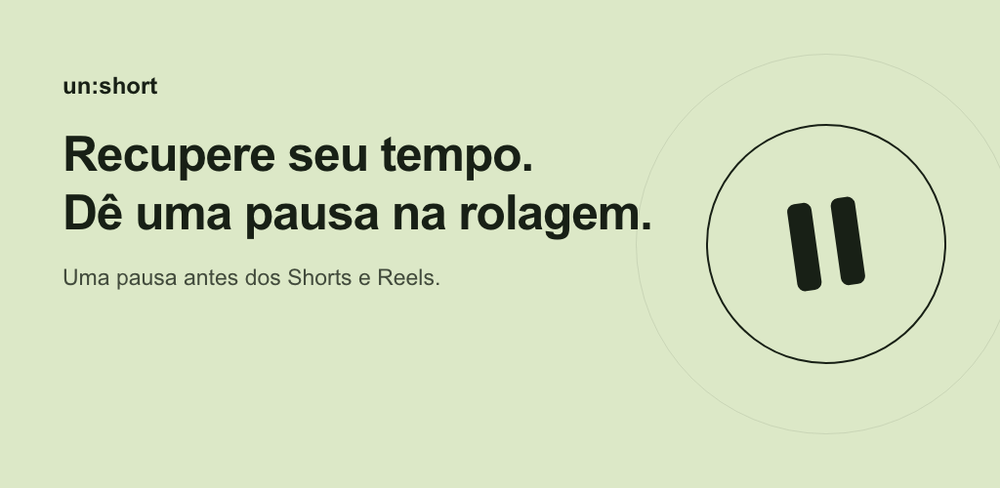
상세 설명
Abriu um app para responder uma mensagem e acabou rolando vídeos sem parar?
O un:short detecta e bloqueia Shorts e Reels sem apagar seus apps. Faça uma pausa antes de decidir se quer continuar assistindo.
• Escolha os apps: YouTube Shorts, Instagram Reels, Facebook Reels, vídeos curtos do Naver e TikTok. Configure cada um separadamente.
• Vire o celular: o timer avança enquanto a tela está virada para baixo e pausa quando você levanta o aparelho. A espera padrão é de 30 segundos e pode ser ajustada.
• Tarefas primeiro: cadastre o que deseja concluir antes de assistir. Após concluir todas as tarefas ativas, você volta à etapa normal de espera. Há repetição diária ou em dias úteis. Bloqueio por tarefas em Beta.
• Defina seus limites: o modo sono reforça o bloqueio na hora de dormir, e o limite diário ajuda a controlar o tempo assistido. Você também pode ocultar o botão de acesso imediato.
• Pause os feeds iniciais: bloqueio opcional em Beta para Instagram, YouTube, Threads e Facebook.
• Veja seus hábitos: estatísticas por dia e horário e notificações de relatórios.
Para começar, permita o serviço de acessibilidade e a exibição sobre outros apps. Escolha os apps e o tempo de espera.
A versão gratuita contém anúncios e um limite diário de acessos imediatos. Há compras no app; Premium inclui acessos imediatos ilimitados. A detecção pode variar conforme as versões do Android e dos apps.
Acessibilidade
Usamos a API AccessibilityService do Android para detectar telas de Shorts, Reels e feeds selecionados, além da rolagem, e controlar o bloqueio. Essa permissão é necessária e pode ser revogada nas configurações do Android.
Privacidade
Estatísticas e tarefas são salvas no aparelho. Anúncios, compras, análise de uso, diagnóstico de erros e configuração de recursos podem usar serviços de rede. Consulte a política de privacidade.
ru-RU · un:short - Блокировка Shorts
Сохраните приложения. Пауза перед Shorts и Reels, чтобы завершить свои задачи.
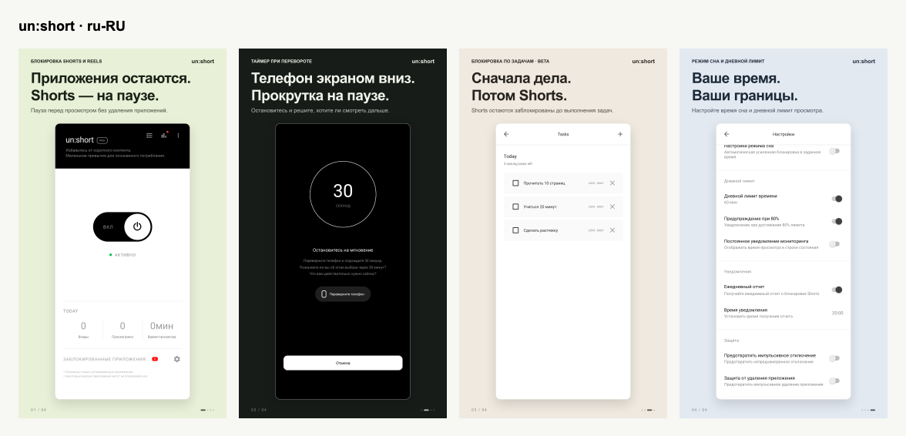
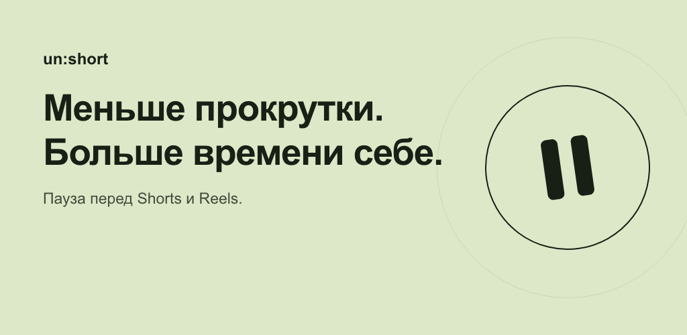
상세 설명
Открыли приложение, чтобы ответить на сообщение, и незаметно увлеклись короткими видео?
un:short распознаёт и блокирует Shorts и Reels без удаления нужных приложений. Сделайте паузу и решите, хотите ли смотреть дальше.
• Выберите приложения: YouTube Shorts, Instagram Reels, Facebook Reels, короткие видео Naver и TikTok. Блокировка настраивается отдельно.
• Переверните телефон: таймер идёт, пока экран направлен вниз, и останавливается, когда вы поднимаете телефон. По умолчанию ожидание длится 30 секунд; время можно изменить.
• Сначала дела: добавьте задачи, которые хотите выполнить перед просмотром. После завершения всех активных задач возвращается обычный этап ожидания. Есть ежедневный повтор и повтор по будням. Блокировка по задачам работает в режиме Beta.
• Задайте ограничения: режим сна усиливает блокировку перед сном, а дневной лимит помогает управлять временем просмотра. Кнопку мгновенного просмотра можно скрыть.
• Приостановите ленты: дополнительная Beta-блокировка главных лент Instagram, YouTube, Threads и Facebook.
• Узнайте свои привычки: статистика по дням и часам, уведомления с отчётами.
Для начала разрешите службу специальных возможностей и показ поверх других приложений. Выберите приложения и время ожидания.
Бесплатная версия содержит рекламу и дневной лимит мгновенных просмотров. Доступны встроенные покупки; Premium включает неограниченное число мгновенных просмотров. Распознавание зависит от версий Android и целевых приложений.
Специальные возможности
API AccessibilityService Android распознаёт выбранные экраны Shorts, Reels и лент, а также прокрутку, и управляет блокировкой. Для этих функций нужно разрешение, которое можно отозвать в настройках Android.
Конфиденциальность
Статистика и задачи хранятся на устройстве. Реклама, покупки, анализ использования, диагностика ошибок и настройка функций могут использовать сеть. Подробнее — в политике конфиденциальности.
it-IT · un:short - Blocca Shorts
Tieni le tue app. Metti in pausa Shorts e Reels e completa prima le attività.
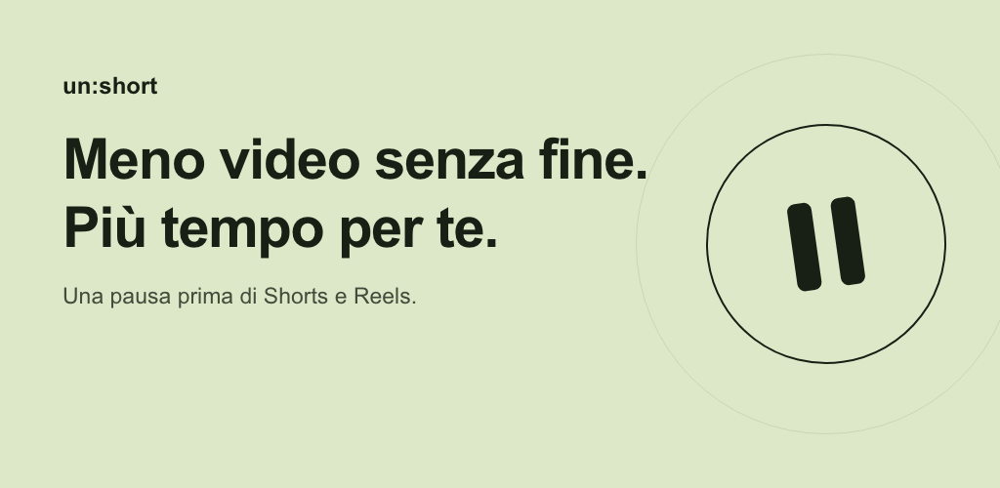
상세 설명
Apri un’app per rispondere a un messaggio e finisci a scorrere video senza fermarti?
un:short rileva e blocca Shorts e Reels senza eliminare le tue app. Fermati un momento prima di decidere se continuare a guardare.
• Scegli le app: YouTube Shorts, Instagram Reels, Facebook Reels, video brevi di Naver e TikTok. Il blocco si imposta per ogni app.
• Capovolgi il telefono: il timer avanza quando lo schermo è rivolto verso il basso e si ferma quando sollevi il telefono. L’attesa predefinita è di 30 secondi e si può modificare.
• Prima le attività: aggiungi ciò che vuoi completare prima di guardare. Una volta concluse tutte le attività attive, riprende la normale fase di attesa. Puoi ripeterle ogni giorno o nei giorni feriali. Funzione in Beta.
• Decidi i tuoi limiti: la modalità sonno rafforza il blocco prima di dormire; il limite giornaliero ti aiuta a gestire il tempo di visione. Puoi anche nascondere il pulsante di accesso immediato.
• Metti in pausa i feed: blocco opzionale in Beta dei feed iniziali di Instagram, YouTube, Threads e Facebook.
• Scopri le tue abitudini: statistiche giornaliere e orarie e notifiche dei report.
Per iniziare, autorizza il servizio di accessibilità e la visualizzazione sopra altre app. Scegli le app e il tempo di attesa.
La versione gratuita include annunci e un limite giornaliero agli accessi immediati. Sono disponibili acquisti in-app; Premium include accessi immediati illimitati. Il rilevamento può variare con le versioni di Android e delle app.
Accessibilità
L’API AccessibilityService di Android rileva schermate Shorts, Reels e feed selezionati, oltre allo scorrimento, e gestisce il blocco. L’autorizzazione è necessaria e può essere revocata nelle impostazioni Android.
Privacy
Statistiche e attività sono salvate sul dispositivo. Annunci, acquisti, analisi di utilizzo, diagnosi degli errori e configurazione delle funzioni possono usare la rete. Consulta l’informativa sulla privacy.
hi-IN · un:short - शॉर्ट्स रोकें
ऐप रखें, शॉर्ट्स और रील्स रोकें। फ़ोन पलटें और देखने से पहले अपने काम पूरे करें।
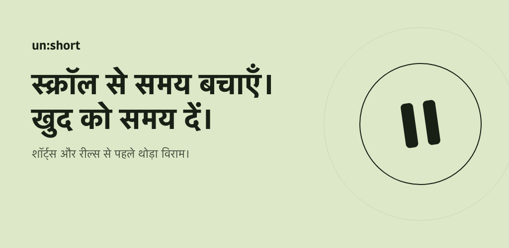
상세 설명
मैसेज का जवाब देने के लिए ऐप खोला था, लेकिन फिर छोटे वीडियो देखते रह गए?
un:short आपके ज़रूरी ऐप हटाए बिना Shorts और Reels की स्क्रीन पहचानकर उन्हें रोकता है। देखने से पहले थोड़ा रुकें और खुद तय करें कि आगे देखना है या नहीं।
• ऐप चुनें: YouTube Shorts, Instagram Reels, Facebook Reels, Naver के छोटे वीडियो और TikTok। हर ऐप के लिए अलग सेटिंग रखें।
• फ़ोन पलटकर रखें: स्क्रीन नीचे होने पर टाइमर चलता है और फ़ोन उठाने पर रुक जाता है। डिफ़ॉल्ट इंतज़ार 30 सेकंड है, जिसे बदल सकते हैं।
• पहले काम पूरे करें: देखने से पहले पूरे करने वाले काम जोड़ें। सभी सक्रिय काम पूरे होने पर सामान्य इंतज़ार का चरण वापस आता है। रोज़ या सोमवार से शुक्रवार तक दोहराने का विकल्प है। टास्क लॉक Beta में है।
• अपनी सीमा तय करें: स्लीप मोड सोने के समय रोक को मज़बूत करता है। रोज़ की देखने की समय-सीमा रखें और चाहें तो तुरंत देखने वाला बटन छिपाएँ।
• होम फ़ीड भी रोकें: Instagram, YouTube, Threads और Facebook के लिए वैकल्पिक Beta सुविधा।
• आदतें समझें: दिन और घंटे के अनुसार देखने के आँकड़े और रिपोर्ट सूचनाएँ पाएँ।
शुरू करने के लिए सुलभता सेवा और दूसरे ऐप के ऊपर दिखाने की अनुमति दें। फिर ऐप और इंतज़ार का समय चुनें।
मुफ़्त संस्करण में विज्ञापन हैं और तुरंत देखने की दैनिक सीमा है। इन-ऐप खरीदारी उपलब्ध है; Premium में तुरंत देखने की संख्या असीमित है। पहचान Android और लक्ष्य ऐप के संस्करण पर निर्भर कर सकती है।
सुलभता सेवा
Android AccessibilityService API चुनी गई Shorts, Reels और होम फ़ीड स्क्रीन तथा स्क्रॉल को पहचानकर रोकने की प्रक्रिया चलाती है। इन सुविधाओं के लिए अनुमति ज़रूरी है। Android सेटिंग में इसे कभी भी हटा सकते हैं।
निजता
देखने के आँकड़े और काम डिवाइस पर सेव होते हैं। विज्ञापन, खरीदारी, उपयोग विश्लेषण, त्रुटि रिपोर्ट और सुविधा सेटिंग के लिए नेटवर्क सेवाएँ इस्तेमाल हो सकती हैं। विवरण के लिए निजता नीति देखें।
ar · un:short - حظر المقاطع
احتفظ بتطبيقاتك. أوقف Shorts وReels مؤقتًا، واقلب هاتفك وأنجز مهامك أولًا.
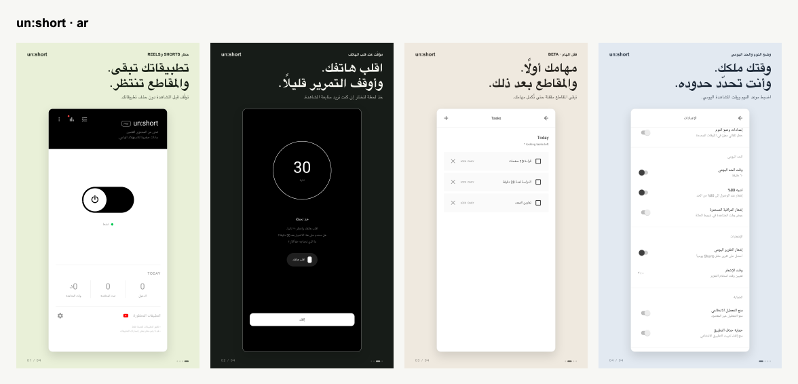
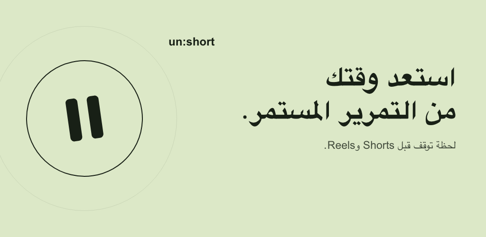
상세 설명
فتحت تطبيقًا للرد على رسالة، ثم وجدت نفسك تتصفح المقاطع القصيرة بلا توقف؟
يتعرّف un:short على Shorts وReels ويحظرهما دون حذف التطبيقات التي تحتاجها. توقّف قليلًا قبل أن تختار مواصلة المشاهدة.
• اختر التطبيقات: YouTube Shorts وInstagram Reels وFacebook Reels ومقاطع Naver القصيرة وTikTok. اضبط الحظر لكل تطبيق على حدة.
• اقلب الهاتف: يعمل المؤقّت عندما تكون الشاشة لأسفل، ويتوقف عند رفع الهاتف. مدة الانتظار الافتراضية 30 ثانية ويمكن تعديلها.
• المهام أولًا: أضف ما تريد إنجازه قبل المشاهدة. بعد إكمال جميع المهام النشطة، تعود خطوة الانتظار المعتادة. يمكن تكرار المهام يوميًا أو في أيام الأسبوع من الاثنين إلى الجمعة. قفل المهام ميزة تجريبية Beta.
• حدّد وقتك: يعزّز وضع النوم الحظر عند موعد النوم، ويساعدك الحد اليومي على إدارة وقت المشاهدة. يمكنك أيضًا إخفاء زر المشاهدة الفورية.
• أوقف تصفح الصفحة الرئيسية: حظر اختياري تجريبي Beta لخلاصات Instagram وYouTube وThreads وFacebook.
• تعرّف على عاداتك: إحصاءات يومية وبحسب الساعة وإشعارات بالتقارير.
للبدء، اسمح بخدمة تسهيل الاستخدام والظهور فوق التطبيقات الأخرى. ثم اختر التطبيقات ومدة الانتظار.
تتضمن النسخة المجانية إعلانات وحدًا يوميًا لمرات المشاهدة الفورية. تتوفر مشتريات داخل التطبيق؛ وتشمل Premium مشاهدات فورية غير محدودة. قد يختلف الاكتشاف حسب إصدار Android والتطبيق المستهدف.
تسهيل الاستخدام
نستخدم واجهة AccessibilityService في Android لاكتشاف شاشات Shorts وReels والخلاصات المحددة والتمرير، والتحكم في الحظر. تحتاج هذه الميزات إلى الإذن، ويمكن إلغاؤه من إعدادات Android.
الخصوصية
تُحفظ إحصاءات المشاهدة والمهام على الجهاز. قد تستخدم الإعلانات والمشتريات وتحليلات الاستخدام وتشخيص الأخطاء وإعدادات الميزات خدمات الشبكة. راجع سياسة الخصوصية للتفاصيل.
th · un:short - บล็อกวิดีโอสั้น
ใช้แอปเดิมต่อ พัก Shorts และ Reels ด้วยการคว่ำมือถือและทำงานให้เสร็จก่อนดู
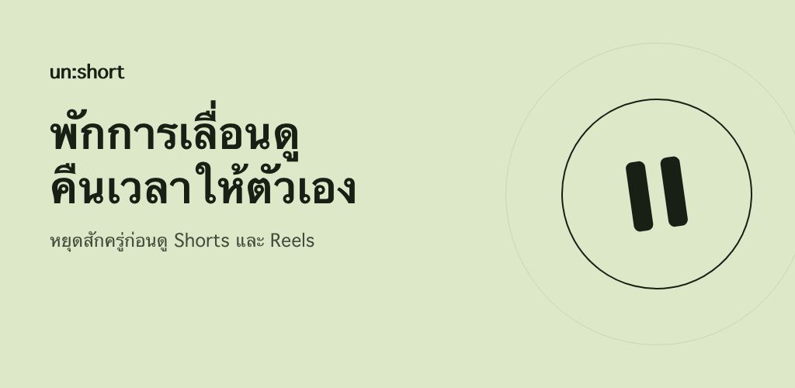
상세 설명
เปิดแอปเพื่อตอบข้อความ แต่เผลอเลื่อนดูวิดีโอสั้นไปเรื่อย ๆ ใช่ไหม?
un:short ตรวจจับและบล็อก Shorts กับ Reels โดยไม่ต้องลบแอปที่จำเป็น หยุดสักครู่ก่อนตัดสินใจว่าจะดูต่อหรือไม่
• เลือกแอปที่จะบล็อก: YouTube Shorts, Instagram Reels, Facebook Reels, วิดีโอสั้นของ Naver และ TikTok ตั้งค่าแยกแต่ละแอปได้
• คว่ำมือถือเพื่อพัก: ตัวจับเวลาจะเดินเมื่อหน้าจอคว่ำลง และหยุดเมื่อยกมือถือขึ้น ค่าเริ่มต้นคือ 30 วินาทีและปรับได้
• ทำงานก่อน แล้วค่อยดู: เพิ่มสิ่งที่ต้องทำก่อนดูวิดีโอ เมื่อทำงานที่มีผลอยู่ครบแล้ว จะกลับสู่ขั้นตอนรอตามปกติ ตั้งซ้ำทุกวันหรือวันจันทร์ถึงศุกร์ได้ การล็อกตามงานเป็นฟีเจอร์ Beta
• กำหนดขอบเขตของตัวเอง: โหมดนอนช่วยเพิ่มความเข้มงวดของการบล็อกในช่วงเข้านอน และจำกัดเวลาดูต่อวันได้ รวมถึงซ่อนปุ่มดูทันทีได้
• พักฟีดหน้าหลัก: เลือกเปิดการบล็อกฟีดของ Instagram, YouTube, Threads และ Facebook ได้ เป็นฟีเจอร์ Beta
• เข้าใจพฤติกรรมของตัวเอง: ดูสถิติรายวันและรายชั่วโมง พร้อมการแจ้งเตือนรายงาน
เริ่มต้นด้วยการอนุญาตบริการการช่วยเหลือพิเศษและการแสดงทับแอปอื่น จากนั้นเลือกแอปและเวลารอ
เวอร์ชันฟรีมีโฆษณาและจำกัดจำนวนครั้งที่ดูทันทีต่อวัน มีการซื้อในแอป โดย Premium รวมการดูทันทีแบบไม่จำกัดจำนวนครั้ง การตรวจจับอาจแตกต่างตามเวอร์ชัน Android และแอปเป้าหมาย
การช่วยเหลือพิเศษ
ใช้ Android AccessibilityService API เพื่อตรวจจับหน้าจอ Shorts, Reels และฟีดที่เลือก รวมถึงการเลื่อน และควบคุมการบล็อก ฟีเจอร์เหล่านี้ต้องได้รับสิทธิ์ ซึ่งยกเลิกได้ในการตั้งค่า Android
ความเป็นส่วนตัว
สถิติการดูและรายการงานจัดเก็บในอุปกรณ์ โฆษณา การซื้อ การวิเคราะห์การใช้งาน การรายงานข้อผิดพลาด และการตั้งค่าฟีเจอร์อาจใช้เครือข่าย ดูรายละเอียดในนโยบายความเป็นส่วนตัว
tr-TR · un:short - Shorts Engelle
Uygulamaların kalsın. Telefonu çevir, görevlerini bitir, kısa videolara ara ver.
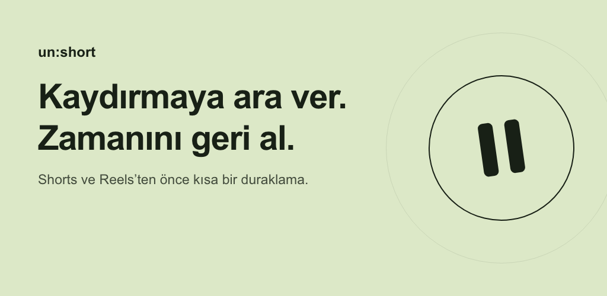
상세 설명
Bir mesaja yanıt vermek için uygulamayı açıp kendini kısa videolar izlerken mi buluyorsun?
un:short, ihtiyaç duyduğun uygulamaları silmeden Shorts ve Reels ekranlarını algılar ve engeller. Devam edip etmemeye karar vermeden önce kısa bir ara ver.
• Uygulamaları seç: YouTube Shorts, Instagram Reels, Facebook Reels, Naver kısa videoları ve TikTok. Her uygulama için ayrı ayar yap.
• Telefonunu ters çevir: sayaç ekran aşağı bakarken ilerler, telefonu kaldırınca durur. Varsayılan bekleme süresi 30 saniyedir ve değiştirilebilir.
• Önce görevler: izlemeden önce bitirmek istediğin işleri ekle. Tüm etkin görevler tamamlandığında normal bekleme adımına dönülür. Her gün veya hafta içi tekrar edebilir. Görev kilidi Beta aşamasındadır.
• Sınırlarını belirle: uyku modu yatma saatinde engellemeyi güçlendirir. Günlük izleme sınırıyla zamanını yönet; istersen anında izleme düğmesini gizle.
• Ana akışa da ara ver: Instagram, YouTube, Threads ve Facebook için isteğe bağlı Beta engelleme.
• Alışkanlıklarını gör: günlük ve saatlik izleme istatistikleri ile rapor bildirimleri.
Başlamak için erişilebilirlik hizmetine ve diğer uygulamaların üzerinde görüntülemeye izin ver. Uygulamaları ve bekleme süresini seç.
Ücretsiz sürüm reklam içerir ve anında izleme için günlük sınır uygular. Uygulama içi satın alımlar vardır; Premium sınırsız sayıda anında izleme sunar. Algılama, Android ve hedef uygulama sürümüne göre değişebilir.
Erişilebilirlik
Android AccessibilityService API, seçilen Shorts, Reels ve ana akış ekranlarını ve kaydırmayı algılayarak engellemeyi yönetir. Bu özellikler için izin gereklidir ve Android ayarlarından geri alınabilir.
Gizlilik
İzleme istatistikleri ve görevler cihazda saklanır. Reklamlar, satın alımlar, kullanım analizi, hata tanılama ve özellik ayarları ağ hizmetlerini kullanabilir. Ayrıntılar için gizlilik politikasına bak.
vi · un:short - Chặn video ngắn
Giữ ứng dụng, tạm dừng Shorts và Reels. Úp điện thoại, làm xong việc rồi xem.
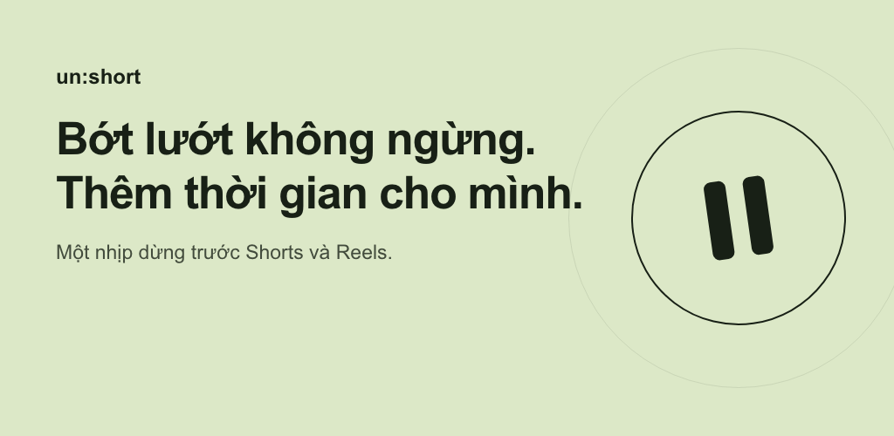
상세 설명
Mở ứng dụng để trả lời tin nhắn nhưng rồi lại cuốn vào những video ngắn?
un:short phát hiện và chặn Shorts cùng Reels mà không cần xóa ứng dụng. Dừng lại một chút trước khi tự quyết định có xem tiếp hay không.
• Chọn ứng dụng cần chặn: YouTube Shorts, Instagram Reels, Facebook Reels, video ngắn Naver và TikTok. Thiết lập riêng cho từng ứng dụng.
• Úp điện thoại để nghỉ: bộ đếm chạy khi màn hình hướng xuống và tạm dừng khi bạn nhấc máy lên. Thời gian chờ mặc định là 30 giây và có thể điều chỉnh.
• Làm việc trước, xem sau: thêm việc muốn hoàn thành trước khi xem. Khi tất cả việc đang áp dụng đã xong, bạn trở lại bước chờ thông thường. Hỗ trợ lặp mỗi ngày hoặc từ thứ Hai đến thứ Sáu. Khóa theo công việc đang ở giai đoạn Beta.
• Tự đặt giới hạn: chế độ ngủ tăng cường chặn vào giờ ngủ, còn giới hạn hằng ngày giúp quản lý thời gian xem. Bạn cũng có thể ẩn nút xem ngay.
• Tạm dừng bảng tin: tùy chọn chặn Beta cho trang chủ Instagram, YouTube, Threads và Facebook.
• Hiểu thói quen của mình: thống kê theo ngày, theo giờ và thông báo báo cáo.
Để bắt đầu, cho phép dịch vụ trợ năng và hiển thị trên ứng dụng khác. Sau đó chọn ứng dụng và thời gian chờ.
Bản miễn phí có quảng cáo và giới hạn số lần xem ngay mỗi ngày. Có mua hàng trong ứng dụng; Premium cho phép xem ngay không giới hạn số lần. Khả năng phát hiện có thể khác nhau theo phiên bản Android và ứng dụng.
Trợ năng
API AccessibilityService của Android phát hiện các màn hình Shorts, Reels, bảng tin đã chọn và thao tác cuộn để điều khiển việc chặn. Các chức năng này cần quyền trợ năng, có thể thu hồi trong cài đặt Android.
Quyền riêng tư
Thống kê xem và công việc được lưu trên thiết bị. Quảng cáo, giao dịch mua, phân tích sử dụng, chẩn đoán lỗi và cấu hình tính năng có thể dùng dịch vụ mạng. Xem chính sách quyền riêng tư để biết thêm.
in · un:short - Blokir Shorts
Tetap pakai aplikasimu. Jeda Shorts dan Reels, balik ponsel, selesaikan tugas.
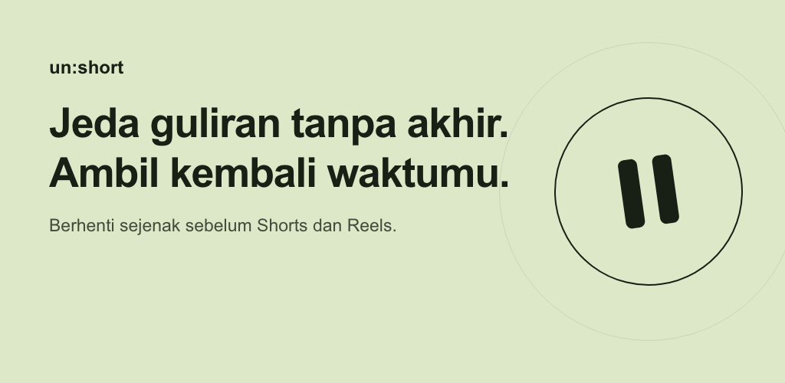
상세 설명
Buka aplikasi untuk membalas pesan, lalu malah terus menonton video pendek?
un:short mendeteksi dan memblokir Shorts serta Reels tanpa menghapus aplikasi yang kamu perlukan. Berhenti sejenak sebelum memilih untuk lanjut menonton.
• Pilih aplikasi: YouTube Shorts, Instagram Reels, Facebook Reels, video pendek Naver, dan TikTok. Atur pemblokiran tiap aplikasi secara terpisah.
• Balik ponsel: timer berjalan saat layar menghadap ke bawah dan berhenti saat ponsel diangkat. Waktu tunggu awal adalah 30 detik dan bisa diubah.
• Tugas dulu, video nanti: tambahkan hal yang ingin diselesaikan sebelum menonton. Setelah semua tugas aktif selesai, langkah menunggu biasa akan kembali. Mendukung pengulangan harian atau Senin–Jumat. Kunci tugas masih dalam tahap Beta.
• Tentukan batasmu: mode tidur memperkuat pemblokiran menjelang tidur, dan batas harian membantu mengatur waktu menonton. Tombol tonton langsung juga bisa disembunyikan.
• Jeda beranda: pemblokiran Beta opsional untuk beranda Instagram, YouTube, Threads, dan Facebook.
• Kenali kebiasaanmu: statistik harian dan per jam serta notifikasi laporan.
Untuk memulai, izinkan layanan aksesibilitas dan tampilan di atas aplikasi lain. Pilih aplikasi serta waktu tunggu.
Versi gratis berisi iklan dan batas harian untuk tonton langsung. Pembelian dalam aplikasi tersedia; Premium mencakup tonton langsung tanpa batas jumlah. Deteksi dapat berbeda menurut versi Android dan aplikasi tujuan.
Aksesibilitas
API AccessibilityService Android mendeteksi layar Shorts, Reels, beranda yang dipilih, dan guliran untuk mengendalikan pemblokiran. Fitur ini memerlukan izin yang bisa dicabut melalui setelan Android.
Privasi
Statistik menonton dan tugas disimpan di perangkat. Iklan, pembelian, analisis penggunaan, diagnosis error, dan konfigurasi fitur dapat menggunakan jaringan. Lihat kebijakan privasi untuk detailnya.